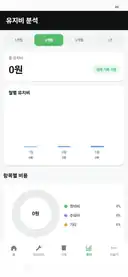

BIKE HOME
바이크·주행거리 관리
바이크 등록, 현재 주행거리와 주요 소모품 상태를 확인하는 홈 화면입니다.
처음 실제 계기판 주행거리를 기준값으로 설정한 뒤 주행으로 판단된 거리를 자동 누적합니다. 엔진오일·타이어·브레이크 등 소모품의 남은 거리 계산도 이 현재 주행거리를 기준으로 이어집니다.
엔진오일, 앞·뒤 타이어, 앞·뒤 브레이크패드, 에어필터, 구동계 등의 교체주기와 남은 거리를 관리합니다.
교체 날짜와 당시 주행거리를 남기면 다음 점검 기준으로 자동 반영합니다.
현재 주행거리와 마지막 교체기록, 교체주기를 비교해 점검이 가까운 항목을 확인합니다.
정비·비용 기록에 관련 사진을 함께 남겨 나중에 부품이나 영수증을 확인할 수 있습니다.
정비비와 기타 바이크 지출을 날짜별로 기록하고 상세 확인·수정·삭제가 가능합니다.
선택 기간의 실제 비용과 주행거리 이력을 기준으로 총 유지비와 km당 유지비를 확인합니다.
바이크 등록·정비관리와 유지비 분석을 테스트 중인 실제 앱 화면입니다.
바이크 등록, 현재 주행거리와 주요 소모품 상태를 확인하는 홈 화면입니다.

기간별 총 유지비와 항목별 지출 흐름을 확인하는 실제 분석 화면입니다.
바이크 정보와 필요한 사진을 등록합니다.
현재 실제 계기판 주행거리를 정확히 입력합니다.
자동 주행거리 판별에 사용할 설정과 상태를 확인합니다.
내 바이크에 맞는 소모품별 교체주기를 직접 설정합니다.
자동관리 ON 상태, 위치 권한, GPS 상태와 자동관리 설정에 필요한 주행 판별 조건을 확인합니다.
계기판 보정 기능으로 현재 기준을 맞춥니다. 과거 정비기록을 억지로 수정하지 않고 현재 기준만 바로잡는 방식입니다.
현재 계기판 기준, 정비주기, 마지막 교체기록 중 필요한 기준값이 빠져 있지 않은지 확인합니다.
해당 소모품의 교체기록이 정상 저장됐는지와 교체 당시 주행거리가 현재 기준보다 올바른지 확인합니다.